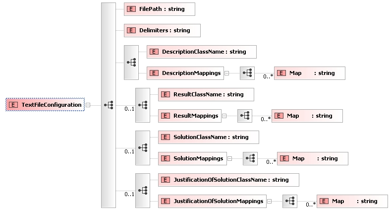

jcolibri.connector.PlainTextConnector
jcolibri.connector.PlainTextConnector
|
||||||||||
| PREV CLASS NEXT CLASS | FRAMES NO FRAMES | |||||||||
| SUMMARY: NESTED | FIELD | CONSTR | METHOD | DETAIL: FIELD | CONSTR | METHOD | |||||||||
java.lang.Object
public class PlainTextConnector
Implements a generic PlainText Connector.
It manages the persistence of the cases automatically into textual files. Features:This connector uses the property in the initFromXMLfile() parameter to obtain the configuration file. This file is a xml that follows the Schema defined in /doc/configfilesSchemas/PlainTextConnector.xsd:

This class does not implement any cache mechanims, so cases are read and written directly. This can be very inefficient in some operations (mainly in reading)
Some methods will fail when executing the connector with a case base file inside a jar file. The retrieve() methods will work properly but the methods that write in the file will fail. Extract the file to the file system and run the connector with that location to solve these problems.
For an example see Test6.
PlainTextTypeConverter,
TypeAdaptor,
Test6| Field Summary | |
|---|---|
protected java.lang.String |
PROP_DELIM
|
protected java.lang.String |
PROP_FILEPATH
|
| Constructor Summary | |
|---|---|
PlainTextConnector()
|
|
| Method Summary | |
|---|---|
void |
close()
Cleanup any resource that the connector might be using, and suspends the service |
void |
deleteCases(java.util.Collection<CBRCase> cases)
Deletes cases from the case base. |
void |
initFromXMLfile(java.net.URL file)
Initialices the connector with the given XML file |
java.util.Collection<CBRCase> |
retrieveAllCases()
Retrieves all cases from the text file. |
java.util.Collection<CBRCase> |
retrieveSomeCases(CaseBaseFilter filter)
Retrieves some cases depending on the filter. |
void |
storeCases(java.util.Collection<CBRCase> cases)
Stores the cases in the data base. |
| Methods inherited from class java.lang.Object |
|---|
clone, equals, finalize, getClass, hashCode, notify, notifyAll, toString, wait, wait, wait |
| Field Detail |
|---|
protected java.lang.String PROP_FILEPATH
protected java.lang.String PROP_DELIM
| Constructor Detail |
|---|
public PlainTextConnector()
| Method Detail |
|---|
public void initFromXMLfile(java.net.URL file)
throws InitializingException
Connector
initFromXMLfile in interface Connectorfile - XMl file with the settings
InitializingException - Raised if the connector can not be initialezed.public void close()
Connector
close in interface Connectorpublic void storeCases(java.util.Collection<CBRCase> cases)
storeCases in interface Connectorcases - Cases to store.
UnImplementedExceptionpublic void deleteCases(java.util.Collection<CBRCase> cases)
deleteCases in interface Connectorcases - Cases to deletepublic java.util.Collection<CBRCase> retrieveAllCases()
retrieveAllCases in interface Connectorpublic java.util.Collection<CBRCase> retrieveSomeCases(CaseBaseFilter filter)
Connector
retrieveSomeCases in interface Connector
|
GAIA - Group for Artificial Intelligence Applications http://gaia.fdi.ucm.es |
|||||||||
| PREV CLASS NEXT CLASS | FRAMES NO FRAMES | |||||||||
| SUMMARY: NESTED | FIELD | CONSTR | METHOD | DETAIL: FIELD | CONSTR | METHOD | |||||||||